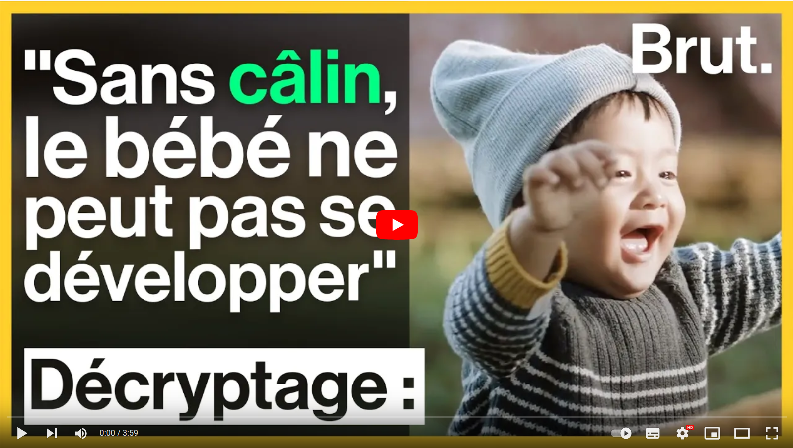
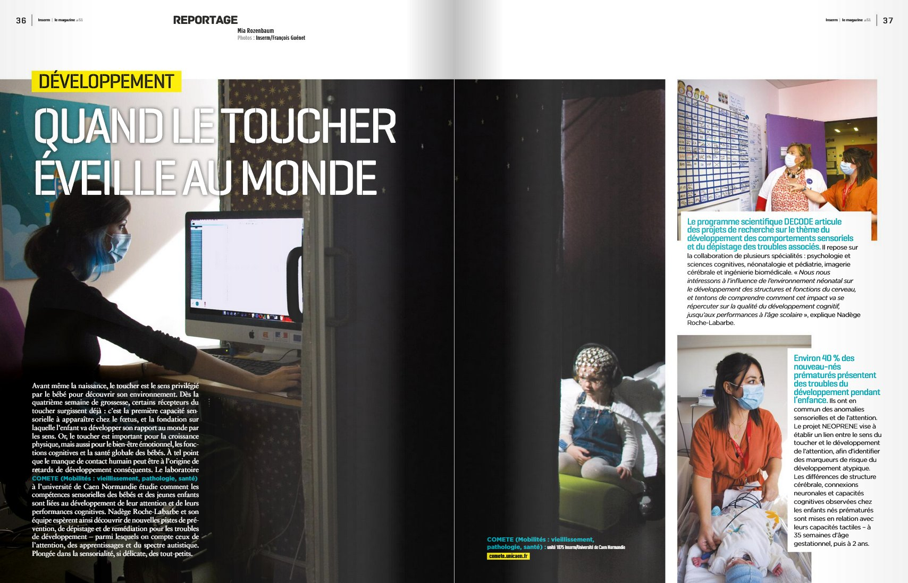
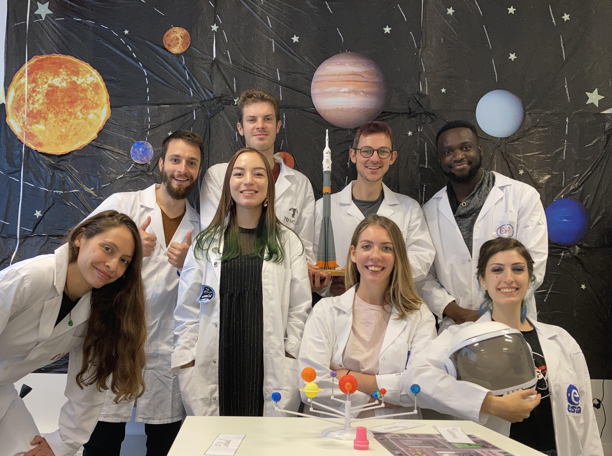
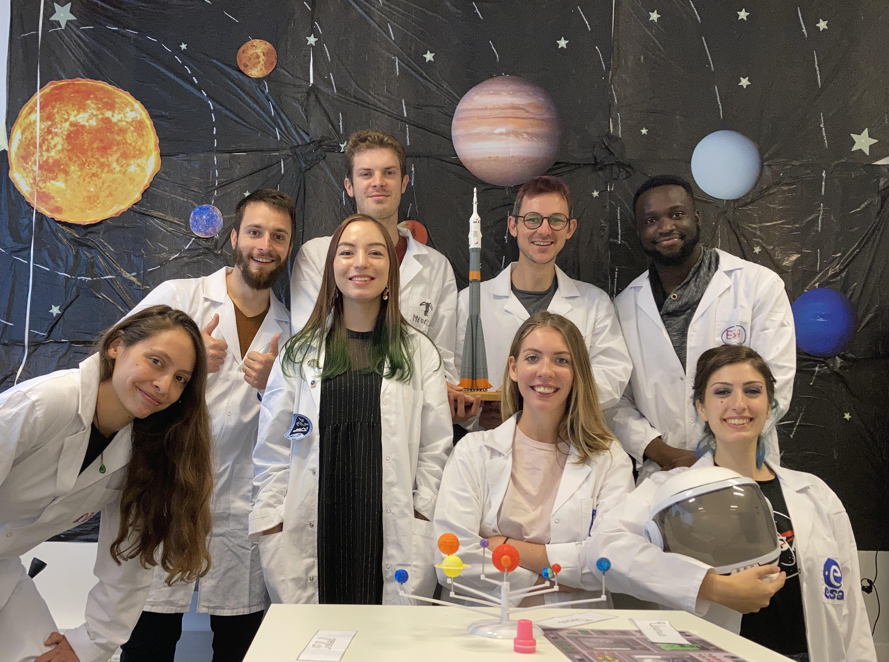

PhD Student

Predictive coding | Sensory prediction | Repetition suppression | Premature neonates | Neurodevelopmental disorders | Tactile | EEG | NIRS
Social medias
Contact me
Email : anne-lise.marais [at] unicaen [dot] fr
Science popularization
2021 December
Brut Media video
With the DECODE team, we were interviewed for Brut media.
This video entitled "Pourquoi les câlins sont indispensables à la survie" is about hugging.
2021 November
Inserm Magazine
With the DECODE team, we were interviewed for the Inserm Magazine number 51.
This article entitled "Quand le toucher éveille au monde" (p36-39) describes briefly all the DECODE program, from our work in the Neonatal Intensive Care Unit of Caen's hospital to the psychomotor and attentional tests we use with the children.
2021 October
Fête de la science
For the Fête de la science 2021, I participated in many activities :
 

I submitted a draw to a scientific illustration competition. This draw represents a baby getting an EEG with a visible tactile event-related potential propagating from the centroparietal electrode when they touched the adult hand. It was exhibited at the Atrium of Rouen from January 2022 to October 2023 under the title "Apprendre par le toucher".
The team and I also submitted a photograph of our daily work to the Scientific Images Exhibition. This image was associated to an article "Scruter le développement des bébés prématurés" in october 2021 PRISME, the journal of the University.
With some members of the lab, we organized the Space escape game during 3 days (09 October to 11 October), opened to all audiences. We welcomed about 100 children during a series of short games about what happens to the body when an astronaut goes to space. I talked about what occurs in the brain after a few weeks in space using a home-printed 3D brain.
2021 March
Têtes chercheuses
I competed in "Têtes Chercheuses" with Dr. Nadège Roche-Labarbe, Dr. Victoria Dumont and Marie Anquetil. This contest allows research teams from different laboratory in Normandy to create educational tools highlighted and distributed in science popularization event during three years. Our project is PRESTON (PREdiction Sensorielle du TOucher chez le Nouveau-né, Tactile sensory prediction in newborns).
2021 February
L'atelier des chercheurs
I participated in "L'atelier des chercheurs" organized by Le dôme in Caen, France. L'atelier des chercheurs is a meet-up program between PhD students and high schoolers. During a day, we can meet students in their school and talk about research, what it's like to be a PhD student, what we do in our laboratory and what we work on. During that day I prepared a presentation on generalities about the brain, how it works, how it grows and I introduced my PhD topic. On this picture, I was introducing the concept of electrical variations in the brain by showing a real EEG plot during a sensory prediction task.
Chercheurs Chercheuses

I participated in Chercheurs Chercheuses organized by Le dôme in Caen, France. Chercheurs chercheuses is an open event during a day where PhD students do conferences or workshops about their research interests. Because of the Covid-19, the event was fully dematerialized so I recorded a webconference with Marie Anquetil availabe on Youtube (Click the link).